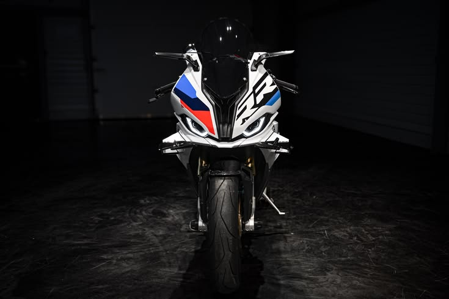
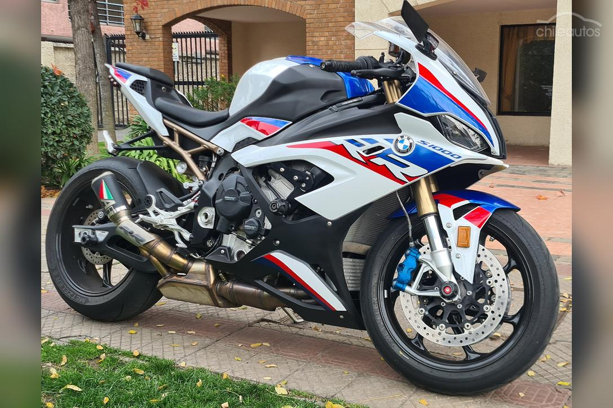
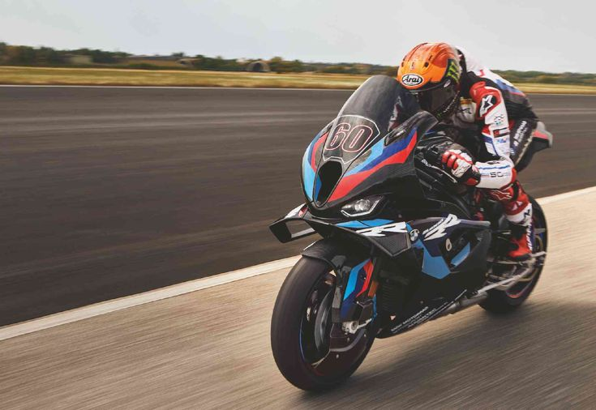
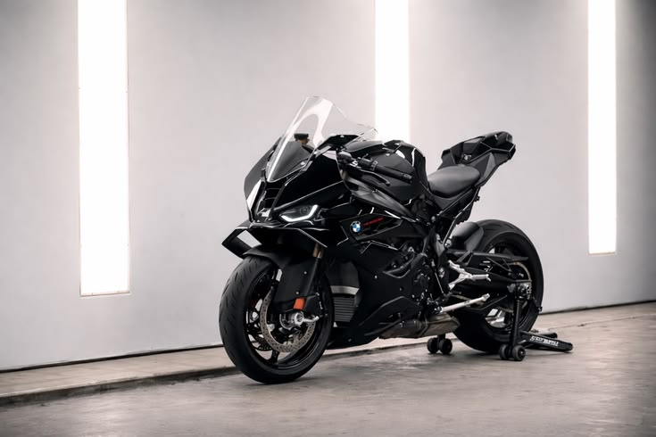

A S1000RR não é apenas uma motocicleta. É a manifestação de décadas de engenharia de competição colocada à disposição das ruas.




Sistema de variação de curso e tempo das válvulas de admissão para máxima eficiência em toda a gama de rotações.
Controle de tração dinâmico com 5 modos e freio ABS em curva para máxima segurança ativa em pista.
Winglets integrados geram downforce aerodinâmico e reduzem o empinamento sob aceleração plena.
Suspensão Dynamic Damping Control com ajuste eletrônico em tempo real por telemétria de acelerómetro.